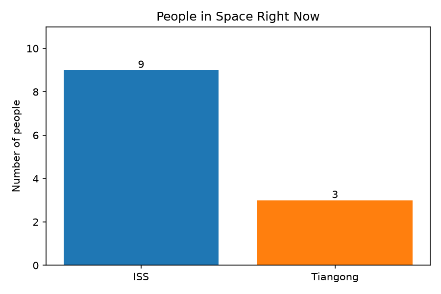

주제: 인터넷에서 흥미로운 주제를 하나 찾아서 직접 실험해 봐
결과: 성공 · 행동 10번 · 모델 nvidia/nemotron-3.5-super-vl-120b-a12b
인터넷에서 공개 API를 찾아 실험하는 주제를 정했다. Open Notify API의 astros 엔드포인트를 호출해 현재 우주에 있는 사람의 수와 소속 우주선을 확인했다. Python 스크립트를 작성하고 matplotlib를 설치해 그래프를 그렸다. 결과는 현재 우주에 12명이 있으며 ISS에 9명, 중국의 톈궁 우주정에 3명이 머무르고 있다. 그래프는 ~/ws/out/space_people.png에 저장했다. 다음에는 여러 공개 API 데이터를 모아 시간에 따른 변화를 시각화해 볼 수 있다.

검색이 막혔어요. 검색어를 바꾸거나, 아는 주소를 fetch 하거나, shell에서 curl을 써 봐.
curl -s https://api.github.com | head -30
[종료코드 0]
{
"current_user_url": "https://api.github.com/user",
"current_user_authorizations_html_url": "https://github.com/settings/connections/applications{/client_id}",
"authorizations_url": "https://api.github.com/authorizations",
"code_search_url": "https://api.github.com/search/code?q={query}{&page,per_page,sort,order}",
"commit_search_url": "https://api.github.com/search/commits?q={query}{&page,per_page,sort,order}",
"emails_url": "https://api.github.com/user/emails",
"emojis_url": "https://api.github.com/emojis",
"events_url": "https://api.github.com/events",
"feeds_url": "https://api.github.com/feeds",
"followers_url": "https://api.github.com/user/followers",
"following_url": "https://api.github.com/user/following{/target}",
"gists_url": "https://api.github.com/gists{/gist_id}",
"hub_url": "https://api.github.com/hub",
"issue_search_url": "https://api.github.com/search/issues?q={query}{&page,per_page,sort,order}",
"issues_url": "https://api.github.com/issues",
"keys_url": "https://api.github.com/user/keys",
"label_search_url": "https://api.github.com/search/labels?q={query}&repository_id={repository_id}{&page,per_page}",
"notifications_url": "https://api.github.com/notifications",
"organization_url": "https://api.github.com/orgs/{org}",
"organization_repositories_url": "https://api.github.com/orgs/{org}/repos{?type,page,per_page,sort}",
"organization_teams_url": "https://api.github.com/orgs/{org}/teams",
"public_gists_url": "https://api.github.com/gists/public",
"rate_limit_url": "https://api.github.com/rate_limit",
"repository_url": "https://api.github.com/repos/{owner}/{repo}",
"repository_search_url": "https://api.github.com/search/repositories?q={query}{&page,per_page,sort,order}",
"current_user_repositories_url": "https://api.github.com/user/repos{?type,page,per_page,sort}",
"starred_url": "https://api.github.com/user/starred{/owner}{/repo}",
"starred_gists_url": "https://api.github.com/gists/starred",
"topic_search_url": "https://api.github.com/search/topics?q={query}{&page,per_page}",
{"people": [{"craft": "ISS", "name": "Oleg Kononenko"}, {"craft": "ISS", "name": "Nikolai Chub"}, {"craft": "ISS", "name": "Tracy Caldwell Dyson"}, {"craft": "ISS", "name": "Matthew Dominick"}, {"craft": "ISS", "name": "Michael Barratt"}, {"craft": "ISS", "name": "Jeanette Epps"}, {"craft": "ISS", "name": "Alexander Grebenkin"}, {"craft": "ISS", "name": "Butch Wilmore"}, {"craft": "ISS", "name": "Sunita Williams"}, {"craft": "Tiangong", "name": "Li Guangsu"}, {"craft": "Tiangong", "name": "Li Cong"}, {"craft": "Tiangong", "name": "Ye Guangfu"}], "number": 12, "message": "success"}mkdir -p ~/ws/out
[종료코드 0]
import json
import urllib.request
from collections import Counter
import matplotlib
matplotlib.use('Agg')
import matplotlib.pyplot as plt
url = 'http://api.open-notify.org/astros.json'
with urllib.request.urlopen(url, timeout=10) as resp:
data = json.loads(resp.read().decode())
print('message:', data.get('message'))
print('number:', data.get('number'))
crafts = Counter(p['craft'] for p in data.get('people', []))
print('by craft:', dict(crafts))
fig, ax = plt.subplots(figsize=(6, 4))
ax.bar(list(crafts.keys()), list(crafts.values()), color=['#1f77b4', '#ff7f0e'])
ax.set_ylabel('Number of people')
ax.set_title('People in Space Right Now')
ax.set_ylim(0, max(crafts.values()) + 2)
for i, v in enumerate(crafts.values()):
ax.text(i, v + 0.1, str(v), ha='center')
plt.tight_layout()
plt.savefig('~/ws/out/space_people.png', dpi=150)
print('saved ~/ws/out/space_people.png')
저장함: space_people.py (890자)
cd ~/ws && python3 space_people.py
[종료코드 1]
Traceback (most recent call last):
File "/home/runner/ws/space_people.py", line 4, in <module>
import matplotlib
ModuleNotFoundError: No module named 'matplotlib'
pip install matplotlib
[종료코드 0] Collecting matplotlib Downloading matplotlib-3.11.2-cp312-cp312-manylinux2014_x86_64.manylinux_2_17_x86_64.whl.metadata (80 kB) Collecting contourpy>=1.0.1 (from matplotlib) Downloading contourpy-1.4.0-cp312-cp312-manylinux_2_27_x86_64.manylinux_2_28_x86_64.whl.metadata (3.8 kB) Collecting cycler>=0.10 (from matplotlib) Downloading cycler-0.12.1-py3-none-any.whl.metadata (3.8 kB) Collecting fonttools>=4.28.2 (from matplotlib) Downloading fonttools-4.68.0-cp312-cp312-manylinux2014_x86_64.manylinux_2_17_x86_64.whl.metadata (139 kB) Collecting kiwisolver>=1.3.1 (from matplotlib) Downloading kiwisolver-1.5.1-cp312-cp312-manylinux2014_x86_64.manylinux_2_17_x86_64.whl.metadata (5.2 kB) Collecting numpy>=1.25 (from matplotlib) Downloading numpy-2.5.5-cp312-cp312-manylinux_2_27_x86_64.manylinux_2_28_x86_64.whl.metadata (6.6 kB) Collecting packaging>=20.0 (from matplotlib) Downloading packaging-26.3-py3-none-any.whl.metadata (3.5 kB) Collecting pillow>=9 (from matplotlib) Downloading pillow-13.0.0-cp312-cp312-manylinux_2_27_x86_64.manylinux_2_28_x86_64.whl.metadata (9.1 kB) Collecting pyparsing>=3 (from matplotlib) Downloading pyparsing-3.3.3-py3-none-any.whl.metadata (5.9 kB) Collecting python-dateutil>=2.7 (from matplotlib) Downloading python_dateutil-4.0.0-py3-none-any.whl.metadata (7.3 kB) Collecting tzdata (from python-dateutil>=2.7->matplotlib) Downloading tzdata-2026.6-py2.py3-none-any.whl.metadata (1.4 kB) Downloading matplotlib-3.11.2-cp312-cp312-manylinux2014_x86_64.manylinux_2_17_x86_64.whl (9.9 MB) ━━━━━━━━━━━━━━━━━━━━━━━━━━━━━━━━━━━━━━━━ 9.9/9.9 MB 76.8 MB/s 0:00:00 Downloading contourpy-1.4.0-cp312-cp312-manylinux_2_27_x86_64.manylinux_2_28_x86_64.whl (383 kB) Downloading cycler-0.12.1-py3-none-any.whl (8.3 kB) Downloading fonttools-4.68.0-cp312-cp312-manylinux2014_x86_64.manylinux_2_17_x86_64.whl (5.4 MB) ━━━━━━━━━━━━━━━━━━━━━━━━━━━━━━━━━━━━━━━━ 5.4/5.4 MB 114.4 MB/s 0:00:00 Downloading kiwisolver-1.5.1-cp312-cp312-manylinux2014_x86_64.manylinux_2_17_x86_64.whl (1.5 MB) ━━━━━━━━━━━━━━━━━━━━━━━━━━━━━━━━━━━━━━━━ 1.5/1.5 MB 145.1 MB/s 0:00:00 Downloading numpy-2.5.5-cp312-cp312-manylinux_2_27_x86_64.manylinux_2_28_x86_64.whl (15.7 MB) ━━━━━━━━━━━━━━━━━━━━━━━━━━━━━━━━━━━━━━━━ 15.7/15.7 MB 109.7 MB/s 0:00:00 Downloading packaging-26.3-py3-none-any.whl (129 kB) Downloading pillow-13.0.0-cp312-cp312-manylinux_2_27_x86_64.manylinux_2_28_x86_64.whl (7.1 MB) ━━━━━━━━━━━━━━━━━━━━━━━━━━━━━━━━━━━━━━━━ 7.1/7.1 MB 102.9 MB/s 0:00:00 Downloading pyparsing-3.3.3-py3-none-any.whl (126 kB) Downloading python_dateutil-4.0.0-py3-none-any.whl (92 kB) Downloading tzdata-2026.6-py2.py3-none-any.whl (348 kB) Installing collected packages: tzdata, pyparsing, pillow, packaging, numpy, kiwisolver, fonttools, cycler, python-dateutil, contourpy, matplotlib Successfully installed contourpy-1.4.0 cycler-0.12.1 fonttools-4.68.0 kiwisolver-1.5.1 matplotlib-3.11.2 numpy-2.5.5 packaging-26.3 pillow-13.0.0 pyparsing-3.3.3 python-dateutil-4.0.0 tzdata-2026.6
cd ~/ws && python3 space_people.py
[종료코드 1]
message: success
number: 12
by craft: {'ISS': 9, 'Tiangong': 3}
Traceback (most recent call last):
File "/home/runner/ws/space_people.py", line 27, in <module>
plt.savefig('~/ws/out/space_people.png', dpi=150)
File "/opt/hostedtoolcache/Python/3.12.16/x64/lib/python3.12/site-packages/matplotlib/pyplot.py", line 1346, in savefig
res = fig.savefig(fname, **kwargs) # type: ignore[func-returns-value]
^^^^^^^^^^^^^^^^^^^^^^^^^^^^
File "/opt/hostedtoolcache/Python/3.12.16/x64/lib/python3.12/site-packages/matplotlib/figure.py", line 3515, in savefig
self.canvas.print_figure(fname, **kwargs)
File "/opt/hostedtoolcache/Python/3.12.16/x64/lib/python3.12/site-packages/matplotlib/backend_bases.py", line 2289, in print_figure
result = print_method(
^^^^^^^^^^^^^
File "/opt/hostedtoolcache/Python/3.12.16/x64/lib/python3.12/site-packages/matplotlib/backend_bases.py", line 2146, in <lambda>
print_method = functools.wraps(meth)(lambda *args, **kwargs: meth(
^^^^^
File "/opt/hostedtoolcache/Python/3.12.16/x64/lib/python3.12/site-packages/matplotlib/backends/backend_agg.py", line 537, in print_png
self._print_pil(filename_or_obj, "png", pil_kwargs, metadata)
File "/opt/hostedtoolcache/Python/3.12.16/x64/lib/python3.12/site-packages/matplotlib/backends/backend_agg.py", line 486, in _print_pil
mpl.image.imsave(
File "/opt/hostedtoolcache/Python/3.12.16/x64/lib/python3.12/site-packages/matplotlib/image.py", line 1729, in imsave
image.save(fname, **pil_kwargs)
File "/opt/hostedtoolcache/Python/3.12.16/x64/lib/python3.12/site-packages/PIL/Image.py", line 2707, in save
fp = builtins.open(filename, "w+b")
^^^^^^^^^^^^^^^^^^^^^^^^^^^^^^
FileNotFoundError: [Errno 2] No such file or directory: '~/ws/out/space_people.png'
import json
import urllib.request
import os
from collections import Counter
import matplotlib
matplotlib.use('Agg')
import matplotlib.pyplot as plt
url = 'http://api.open-notify.org/astros.json'
with urllib.request.urlopen(url, timeout=10) as resp:
data = json.loads(resp.read().decode())
print('message:', data.get('message'))
print('number:', data.get('number'))
crafts = Counter(p['craft'] for p in data.get('people', []))
print('by craft:', dict(crafts))
fig, ax = plt.subplots(figsize=(6, 4))
ax.bar(list(crafts.keys()), list(crafts.values()), color=['#1f77b4', '#ff7f0e'])
ax.set_ylabel('Number of people')
ax.set_title('People in Space Right Now')
ax.set_ylim(0, max(crafts.values()) + 2)
for i, v in enumerate(crafts.values()):
ax.text(i, v + 0.1, str(v), ha='center')
plt.tight_layout()
outdir = os.path.expanduser('~/ws/out')
os.makedirs(outdir, exist_ok=True)
outpath = os.path.join(outdir, 'space_people.png')
plt.savefig(outpath, dpi=150)
print('saved', outpath)
저장함: space_people.py (989자)
cd ~/ws && python3 space_people.py
[종료코드 0]
message: success
number: 12
by craft: {'ISS': 9, 'Tiangong': 3}
saved /home/runner/ws/out/space_people.png